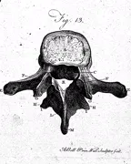
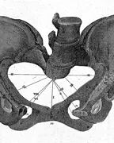
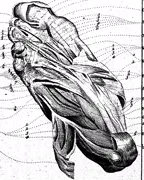
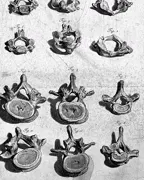
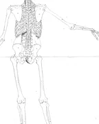

Créditos
De dónde salen las láminas, la postal y la letra de esta web, y con qué licencia se usan.
Imágenes
| Vista | Obra | Autor y colección | Licencia | Fuente |
|---|---|---|---|---|
| The muscles of the human body, first layer, seen from the back, after Albinus (1779) | Grabado de Benard. Wellcome Collection | CC BY 4.0 | Wikimedia Commons | |
 |
Vertebrae: thirteen figures (1798) | Grabado de Andrew Bell. Wellcome Collection | CC BY 4.0 | Wikimedia Commons |
 |
The bones of the pelvis | Grabado de Gennaro Bartoli. Wellcome Collection | CC BY 4.0 | Wikimedia Commons |
 |
The muscles of the hand, after Albinus, and of the foot, after De Courcelles | Grabado de Benard. Wellcome Collection | CC BY 4.0 | Wikimedia Commons |
 |
Cervical, thoracic and lumbar vertebrae (1739) | Grabado según Gérard de Lairesse. Wellcome Collection | CC BY 4.0 | Wikimedia Commons |
 |
Primae delineationes Tabularum sceleti et musculorum corporis humani (BPL 1802: 37) | Jan Wandelaar. Biblioteca de la Universidad de Leiden | Dominio público | Wikimedia Commons |
| Córdoba, postal (años veinte) | Lucien Roisin Besnard | Dominio público | Wikimedia Commons |


Letra y código
La fuente es Roundo, de Indian Type Foundry, distribuida por Fontshare con la licencia SIL Open Font License 1.1. Va dentro de la web, sin cargarla de servidores externos, y el texto de su licencia está en assets/fonts/OFL.txt.
El código (HTML, CSS y JavaScript, sin librerías) se publica con licencia MIT. La licencia CC BY 4.0 se puede leer en creativecommons.org.